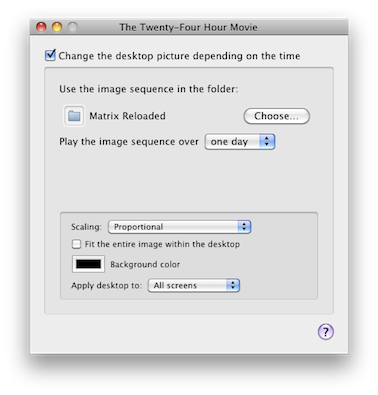

The Twenty-Four Hour Movie lets you set your desktop according to the time of day, week, month, etc. Your desktop pictures will cycle in such a way that each picture consistently appears at the same time during the cycle.
-
Open The Twenty-Four Hour Movie application.
-
If the checkbox “Change the desktop picture depending on the time” is unchecked, check it.
You should see a window similar to this:

-
Click the “Choose…” button and select a folder containing an image sequence.
-
Choose the amount of time you want the image sequence to play over.
The images will change periodically such that the entire length of the sequence lasts the duration you selected.
That’s it! Your desktop may not change immediately, but eventually it should. It also might not be the first image in your sequence; remember: the image chosen depends on the current time.